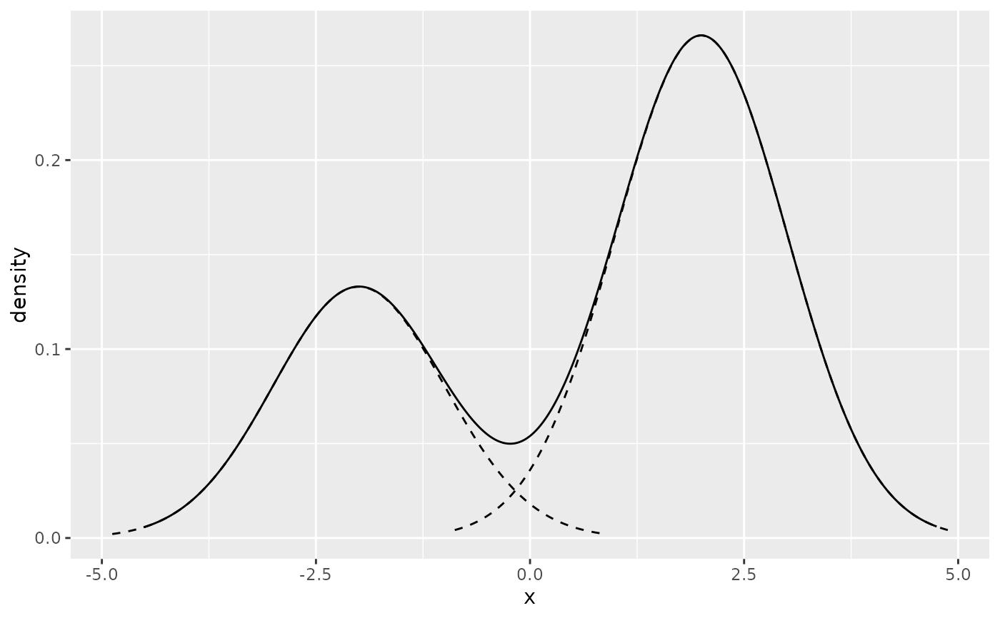
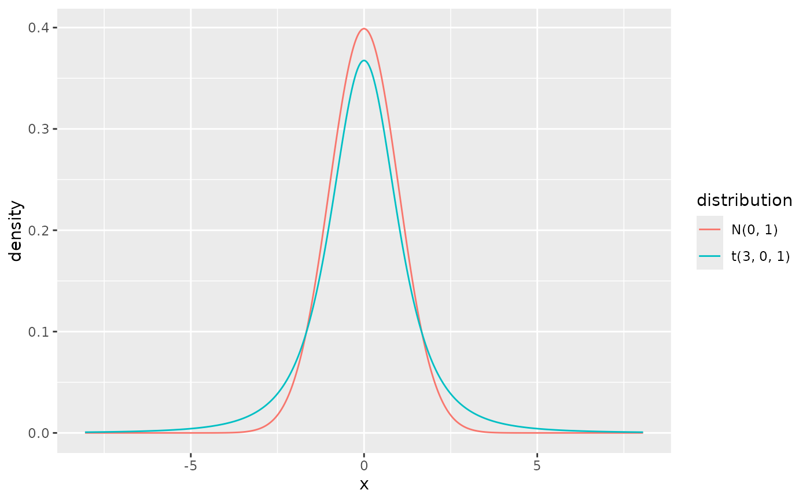
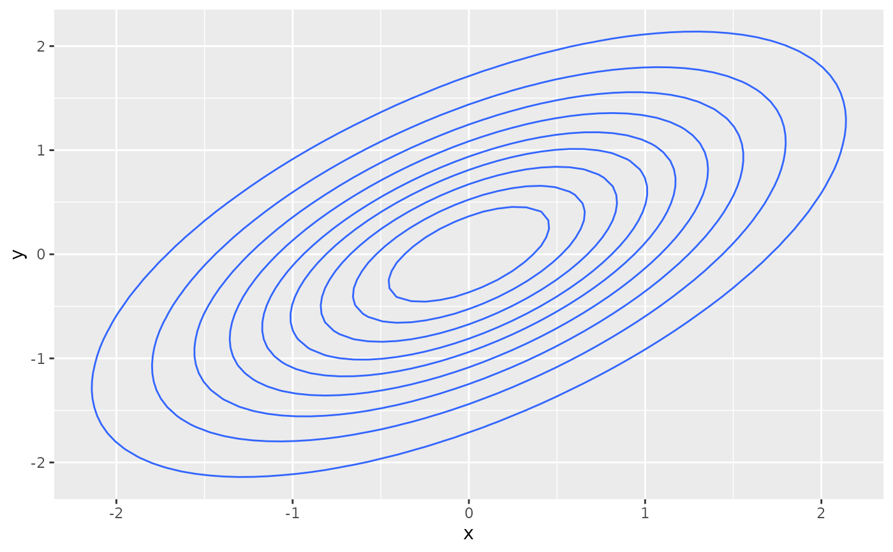

A ggplot2 layer that displays the probability density function (pdf) of a
distributional object. For univariate distributions it draws a line plot
of the density; for bivariate distributions, use geom_pdf_2d().
Usage
geom_pdf(
mapping = NULL,
data = NULL,
dist,
scale = 1,
ngrid = 501,
density_df = NULL,
geom = "line",
position = "identity",
...,
na.rm = FALSE,
show.legend = NA,
inherit.aes = TRUE
)
geom_pdf_2d(
mapping = NULL,
data = NULL,
dist,
ngrid = 101,
prob = seq(0.1, 0.9, by = 0.1),
filled = FALSE,
density_df = NULL,
thresholds = NULL,
...,
na.rm = FALSE,
show.legend = NA,
inherit.aes = TRUE
)Arguments
- mapping
Set of aesthetic mappings. Usually
NULL; whenlength(dist) > 1andmappingisNULL,colouris automatically mapped to the computeddistributionvariable.- data
A data frame. Usually
NULL; the layer does not need user data.- dist
A distribution object from the distributional package, or from
dist_kde().- scale
Scaling factor applied to the density.
- ngrid
Number of grid points at which the density is evaluated. Ignored when
density_dfis supplied.- density_df
This argument is for internal package use to provide pre-computed data frame containing density values when it is available.
- geom
The geometric object used to display the layer. Defaults to
"line"; alternatives such as"area"or"path"also work.- position
Position adjustment, defaults to
"identity".- ...
Other arguments passed to the underlying geom (e.g.
linetype,linewidth,colour,alpha).- na.rm
Passed through to the underlying geom.
- show.legend
Logical; should this layer be included in legends?
- inherit.aes
Logical; if
FALSE, overrides the default aesthetics.- prob
Coverage probabilities for the highest density regions used as contour breaks. Defaults to
seq(0.1, 0.9, by = 0.1). Ignored whenthresholdsis supplied.- filled
Logical. If
TRUE, draw filled HDR bands usingggplot2::geom_contour_filled(). IfFALSE(default), draw unfilled contour lines usingggplot2::geom_contour().- thresholds
Optional numeric vector of HDR density thresholds (the
densitycolumn of anhdr_table()result). When supplied, the internalhdr_table()call is skipped. The conversion from raw thresholds to contourbreaks(with or without the leadingInf) is handled internally based onfilled.
Details
Unlike most geoms, geom_pdf() does not consume data through the standard
data/aesthetic pipeline. Instead, the distribution is supplied through the
dist parameter and the underlying StatPdf generates the plotting data
from it. The computed columns x, density, and distribution are
available via ggplot2::after_stat().
Examples
# Univariate example
mix <- dist_mixture(
dist_normal(-2, 1),
dist_normal(2, 1),
weights = c(1 / 3, 2 / 3)
)
ggplot() +
geom_pdf(dist = mix) +
geom_pdf(dist = dist_normal(-2, 1), scale = 1 / 3, linetype = "dashed") +
geom_pdf(dist = dist_normal(2, 1), scale = 2 / 3, linetype = "dashed")

# Multiple distributions are auto-coloured
ggplot() +
geom_pdf(dist = c(dist_normal(0, 1), dist_student_t(df = 3)))

# Bivariate example
biv <- dist_multivariate_normal(
mu = list(c(0, 0)),
sigma = list(matrix(c(1, 0.6, 0.6, 1), nrow = 2))
)
ggplot() +
geom_pdf_2d(dist = biv)
